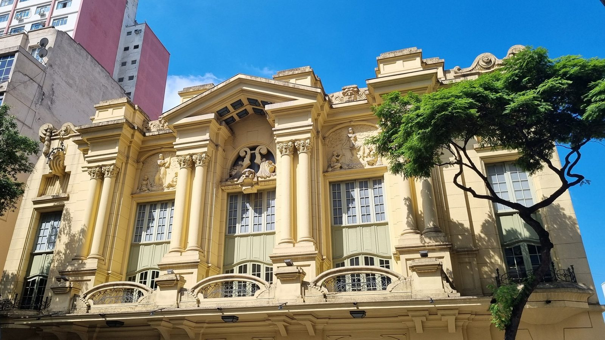

Quanto vale batizar um teatro em São Paulo

Nove casas de espetáculo de São Paulo levam hoje o nome de uma marca na fachada. Teatro Renault, Teatro Bradesco, Teatro Santander, BTG Pactual Hall, Teatro UOL, Teatro Sabesp Frei Caneca, Teatro Claro Mais SP, Teatro Porto e Vibra São Paulo concentram boa parte dos grandes musicais e das temporadas comerciais da cidade. Quanto custa esse nome, quase nenhuma delas conta: os contratos são privados.
Quem batizou o quê, e desde quando
O prédio da Avenida Brigadeiro Luís Antônio, 411, abriu em abril de 1929 como Cine Theatro Paramount, pegou fogo em 1969 e fechou em 1996. Reformado, reabriu em 2001 como Teatro Abril. Em 2012 a T4F, que opera a casa, assinou com a montadora francesa, e a partir de 1º de novembro daquele ano o palco onde estreou Wicked com Gloria Groove virou Teatro Renault.
O Teatro Bradesco já nasceu com sobrenome. Inaugurado em 22 de outubro de 2009 no Bourbon Shopping, com 1.439 lugares, é operado por uma parceria entre a Companhia Zaffari e a Opus, com patrocínio do banco desde a abertura.
Em maio de 2014, com o Teatro Santander ainda em obras no Complexo JK, o banco espanhol comprou da construtora WTorre o naming right, contrato que o Meio & Mensagem noticiou em cerca de R$ 7 milhões por ano, por 12 anos, com renovação automática por mais oito. Procurada pela publicação, a assessoria do Santander não comentou. A casa abriu em 2016.
O BTG Pactual Hall é a reciclagem de um endereço conhecido: o antigo Teatro Alfa, na zona sul, fechado desde 2022, reabriu em 24 de outubro de 2025 com o musical Hair, já sob o nome do banco. Quem opera a casa é a Aventura, e foi lá que estreou Ciranda das Flores.
No terraço do Shopping Pátio Higienópolis, 300 lugares, o Teatro UOL abriu em novembro de 2001 e passou vinte anos como Teatro Folha. O nome atual é de abril de 2022.
A casa do sétimo piso do shopping Frei Caneca, aberta em junho de 2005, já foi Teatro Shopping Frei Caneca e Teatro Opus Frei Caneca. Em 10 de abril de 2024, dentro das comemorações dos 50 anos da companhia de saneamento, o acordo de naming right a rebatizou por dois anos como Teatro Sabesp Frei Caneca. Esse prazo já venceu, e a casa segue com o nome na programação de agosto de 2026; a companhia não anunciou renovação. Administra a Opus Entretenimento, mesma operadora do Teatro Bradesco e do Vibra São Paulo.
Duas trocas de nome também no Vibra São Paulo: a casa abriu em 1999 como Credicard Hall, passou por UnimedHall e hoje leva a marca de combustíveis. Nos Campos Elíseos, o Teatro Porto foi erguido pela seguradora Porto Seguro em maio de 2015 e assina só como Teatro Porto. Foi lá que ficou em cartaz Alguma Coisa Podre.
No Shopping Vila Olímpia, o hoje Teatro Claro Mais SP abriu em julho de 2014 como Theatro NET São Paulo e só virou Claro em janeiro de 2020, quando a marca e a produtora Brain+ remodelaram a casa. Segundo a empresa, a Claro mantém o naming right de teatro mais longevo do país, contado desde o Rio de Janeiro, em 2012. Em maio de 2026 a rede chegou a Fortaleza, onde o Theatro Via Sul virou Teatro Claro MAIS.
Fora da lista fica um caso de fronteira: o Teatro B32, aberto em outubro de 2021 na Avenida Brigadeiro Faria Lima. O nome vem do próprio edifício que abriga a sala, e não de um patrocinador.
O que a marca compra
Repetição. O nome do patrocinador entra no ingresso, no mapa do celular, na conversa de quem marca encontro na porta e na matéria de jornal.
"Como são espaços de grande circulação e alta exposição, a marca passa a ser constantemente mencionada no cotidiano das pessoas. Isso aumenta a familiaridade e faz com que ela permaneça mais presente na memória do consumidor", afirma Marcos Bedendo, professor de branding e marketing da ESPM, em entrevista ao Seu Dinheiro.
Do lado de quem opera, o argumento é de sobrevivência. O antigo Teatro Alfa passou três anos apagado e só reabriu depois de uma reforma de R$ 12 milhões.
"As empresas fazem parte do show. É fundamental que patrocinem cultura no Brasil", diz Luiz Calainho, sócio-fundador da Aventura, em entrevista à Exame.
O valor é segredo
Os valores desses contratos não são divulgados. A exceção é o do Teatro Santander, e mesmo ele saiu de uma reportagem de 2014 que o banco se recusou a confirmar. A Sabesp anunciou a duração, dois anos, sem o valor. Renault, Bradesco, UOL, BTG Pactual, Claro, Porto e Vibra não publicaram cifra nenhuma.
Qualquer número que circule fora do caso Santander é estimativa de terceiro, e este texto não vai fabricar um.
Onde a Lei Rouanet entra, e onde não entra
Nem a Lei Rouanet nem as normas do Pronac tratam de naming right, segundo análise das advogadas Mei Lian Suzin Jou e Renata Ferreira publicada pelo Instituto IDEA. Não há autorização expressa nem proibição.
O que existe são pistas. O Decreto nº 11.453/2023, no artigo 61, inciso II, e a Instrução Normativa MinC nº 29/2026, no artigo 66, inciso VII, dizem que pôr a marca do patrocinador no material de divulgação de um projeto incentivado não configura vantagem indevida.
O inciso I do mesmo artigo trata das ações extras de divulgação, que só valem se o proponente concordar e se não saírem de recurso incentivado. A instrução normativa anterior foi revogada em janeiro de 2026, e os dois dispositivos passaram inteiros para a nova. Traduzindo: até dá para amarrar o nome ao aporte, mas o letreiro e a placa precisam ser pagos com dinheiro não incentivado.
Na prática, naming right de teatro é contrato comercial entre empresas privadas, sujeito à Lei de Propriedade Industrial, e não abatimento de imposto. O incentivo fiscal entra por outra porta: nas produções que sobem nesses palcos.
Em dezembro de 2023, a cidade de São Paulo autorizou por lei, a nº 18.040, a cessão onerosa do direito de nomear equipamento público municipal, com uma trava: a marca entra como sufixo, e a denominação original fica. Regulamentar a cessão cabe ao Executivo. Quando o primeiro contrato aparecer, o valor vai ser público, porque contrato de administração pública é. Até lá, a resposta honesta para quanto vale batizar um teatro em São Paulo é: só o Santander e a WTorre sabem, e faz doze anos que ninguém confirma.